赛迪发布《“十四五”关键应用领域之数据库市场研究报告》，万里数据库入围领导者象限
现阶段，国家对核心领域关键技术的重视已经到了前所未有的高度，数据库作为IT行业重要的基础软件之一，是组织、存储、管理、分析数据的系统，在信息系统的软件和硬件之间起到承上启下的作用，因此数据库是核心领域的关键技术之一，是信息系统建设的核心基础设施之一。
数据库管理系统分类标准比较多，按照数据类型分类，可分为关系型数据库和非关系型数据库；按照部署方式分类，可分为主备集中式和分布式；按照业务类型分类，可分为事务型数据库和分析型数据库。
2021年，中国数据库管理系统市场保持快速增长，规模达到223.5亿元。集中式关系型数据库仍然为市场的主流，但是云数据库及分布式数据库也成为众多厂商研发的重点。云计算的快速发展带动了云数据库市场需求，而对于海量数据、高并发的应用场景，则带动了分布式数据库的市场需求。
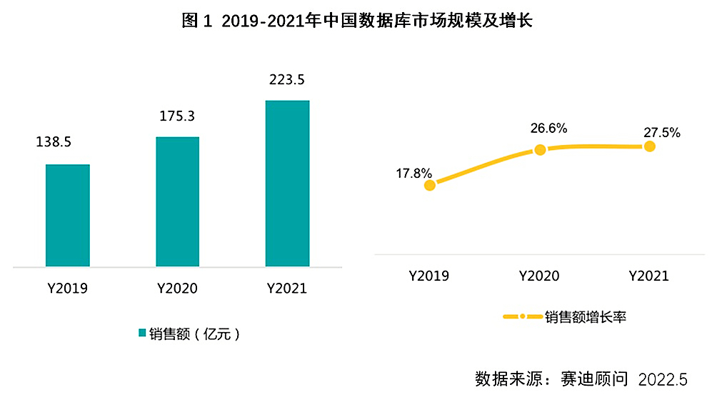
从数据库部署方式来看，现阶段数据库部署方式主要为两种，一种是公有云部署，另一种是本地部署，其中也包括私有云部署。公有云部署因为存在与云产品的捆绑销售，因此以云厂商自身数据库产品为主，而本地部署则不同，数据库厂商基本都能满足要求，竞争较为激烈。2021年，中国数据库市场产品部署方式以公有云部署为主。但在关键应用领域金融、政府、运营商等行业中，本地部署（含私有云）的优势较为明显，达到68.5%，成为客户的首选。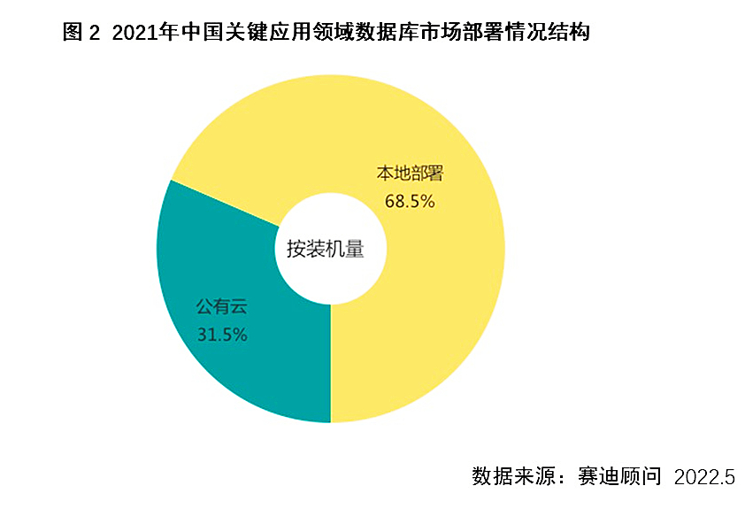
从产品技术路线来看，近年来，开源数据库软件技术不断成熟，能够基本满足部分重点行业业务需求，同时其低廉的使用成本能够大幅降低企业快速扩张带来的IT成本。因此，过去几年开源数据库软件在众多行业取得应用，市场占有率不断提升，2021年在中国数据库市场中占有率达到65.0%。
MySQL、PostgreSQL、MongoDB和Redis是当前最受欢迎的开源数据库。MySQL数据库凭借其稳定性能、低成本、高可用、成熟生态等优势，装机量领先，达到42.6%。
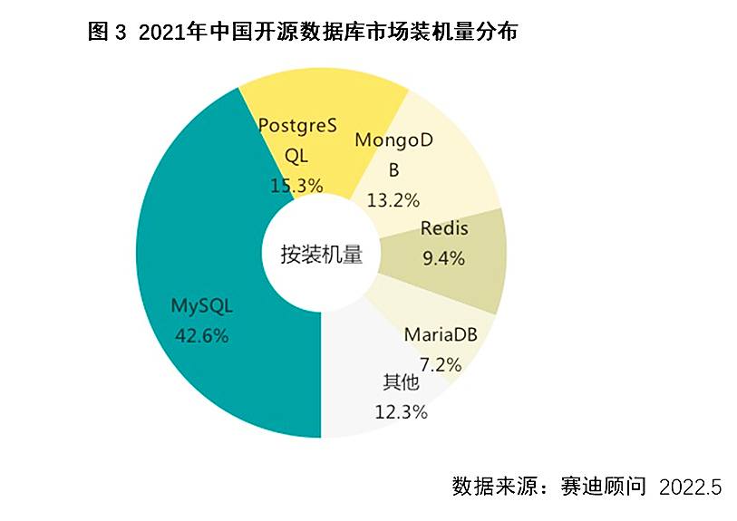
从区域结构来看，2021年，华东、华北和中南三大地区是中国数据库市场发展最为领先的区域，市场份额分别达到26.8%、25.8%和24.8%，但市场增速较西部地区呈现减慢的趋势，随着东数西算工程带来的数据中心在西部地区建设需求，西南、西北地区数据库市场规模呈现高速增长，市场份额进一步提升。
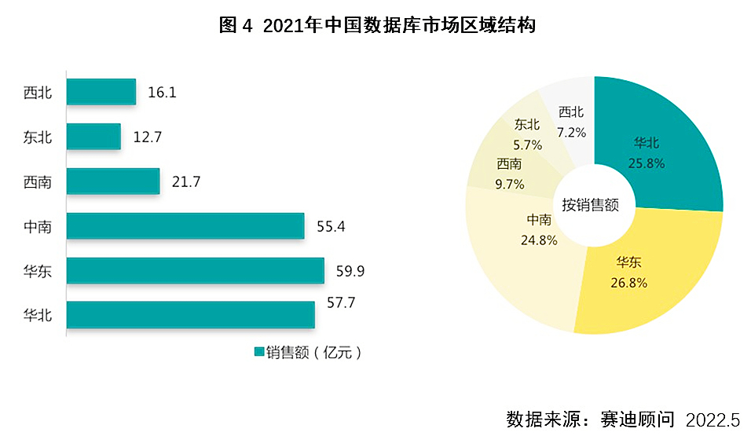
从行业结构来看，金融行业2021年信息化建设加速，是销售额占比最高的市场。受益于政府信息化建设及信息技术应用创新在政府市场的率先推广，政府市场成为销售额占比第二。互联网、运营商、能源也是数据库主要市场。另外，交通、制造行业市场的增速也均高于市场平均水平，主要源于这些行业数字化转型的快速展开，带动了市场需求的增加。
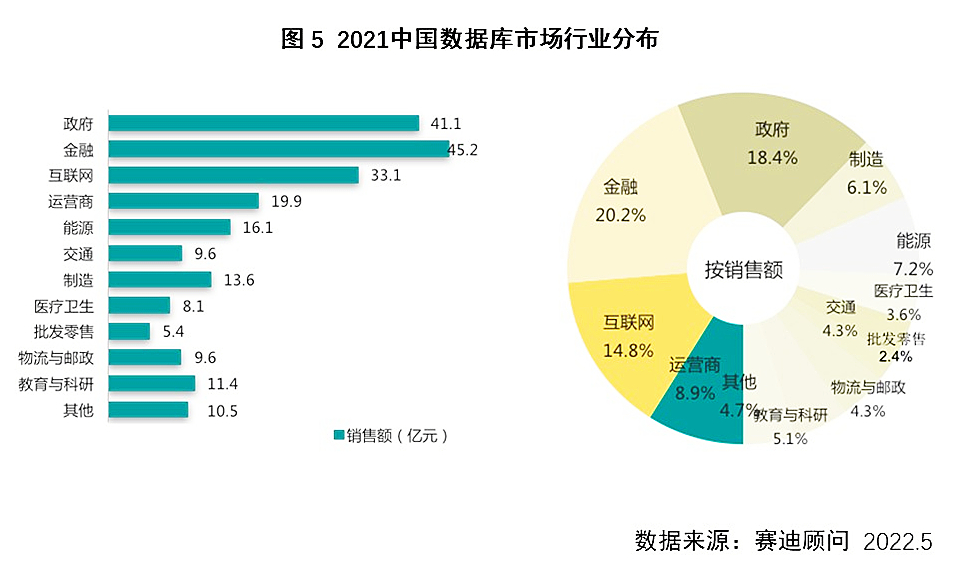
总体来看，现阶段数据库市场呈现出五大特点，一是国家政策有力推动数据库发展；二是新兴技术不断成熟，数据库市场发生变革；三是企业数量增多，市场竞争加剧；四是开源软件成为推动数据库技术发展的重要动力；五是事务型分布式数据库在金融、运营商等核心应用领域需求较大。
报告还针对金融、政府、运营商及能源四个重点行业，从市场规模、市场机遇及典型案例三个维度进行了重点分析。
2021年，中国金融行业数据库市场规模快速增长，达到45.2亿元。金融行业对数据安全性要求较高，因此对数据库要求较高。近几年，随着金融信息化不断推进，金融行业对于IT投资不断加大，但数据库市场需要经过一段时间的技术及产品选型，因此会在未来几年释放更大市场空间。
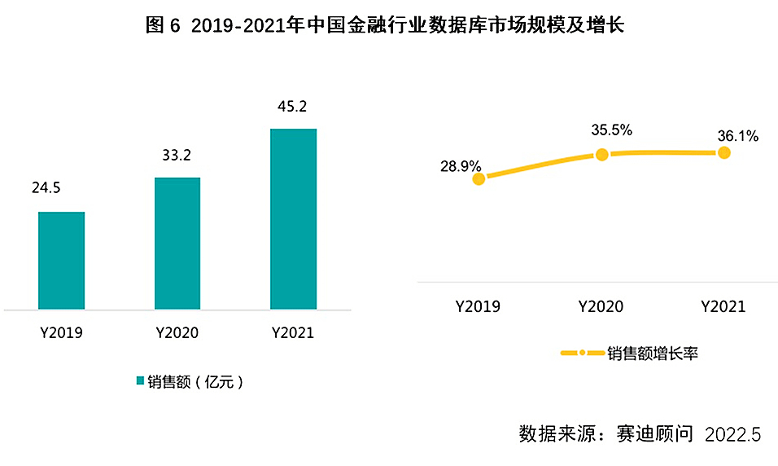
政府行业近年来数据库需求较大，且增长率远高于其他行业。政府市场快速增长，一方面是由于近几年政务信息化的全面开展，另一方面是信息技术应用创新在政府行业的率先推广。政府市场也成为了推动本土数据库厂商快速发展的重要市场。2021年中国政府行业数据库市场规模达到41.1亿元。
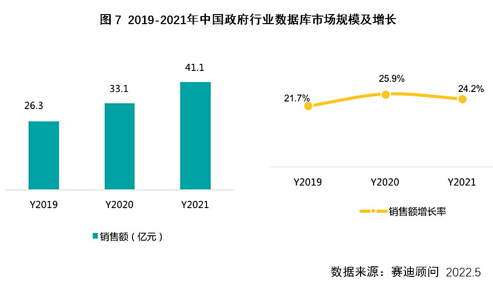
运营商行业每年有大量的数据库需求，但在过去一段时间，开源软件MySQL的使用占比较高。随着信息技术应用创新及运营商行业信息化进行，行业内龙头企业加快与本土厂商合作，2021年中国运营商行业数据库市场规模达到19.9亿元。
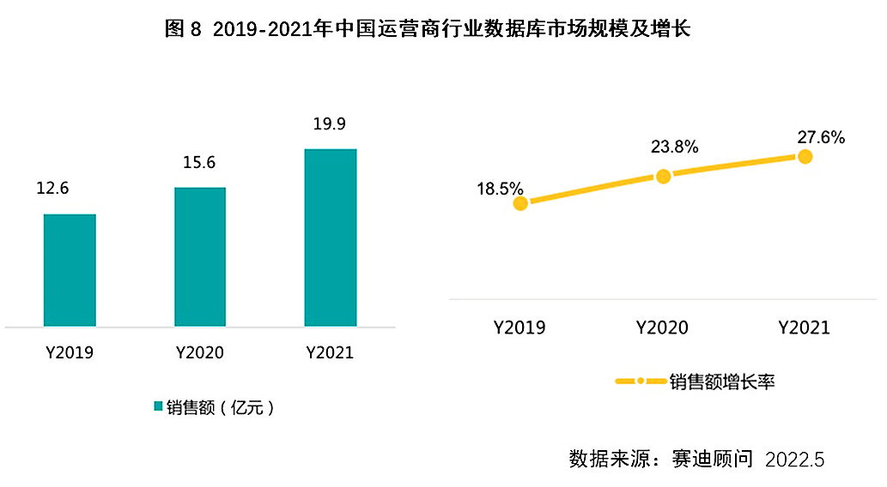
能源行业包括电力、石油石化、煤炭、水利等领域。电力和石油石化每年会有大量的数据库需求，且业务要求相对较低，因此本土厂商凭借良好的服务及相对低的成本，获得了一定的市场份额。2021年中国能源行业数据库市场受益于信息化建设及存量更换，市场规模高速增长，达到16.1亿元。
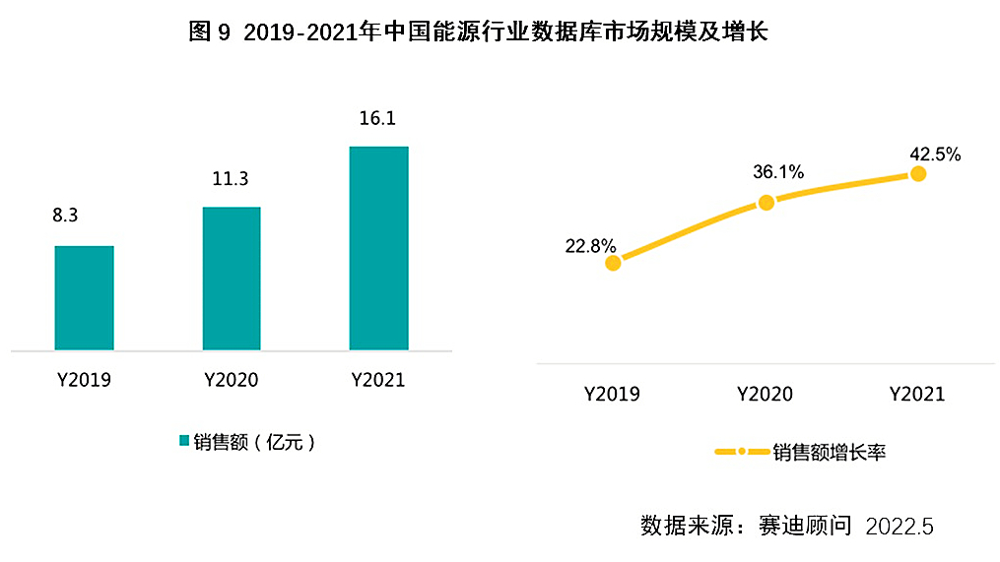
赛迪顾问选取了包括万里数据库在内的多家本土数据库厂商，从主打产品及架构、技术路线、重点行业、典型项目及优劣势等方面进行了全方位的对比分析。本次报告通过指标体系建立模型后对企业进行科学评估，最后得出“十四五”关键应用领域之数据库技术竞争力四象限图。本次评价模型采用竞争力四象限图模型，从技术先进度和产品安全性两个维度对企业展开评估。
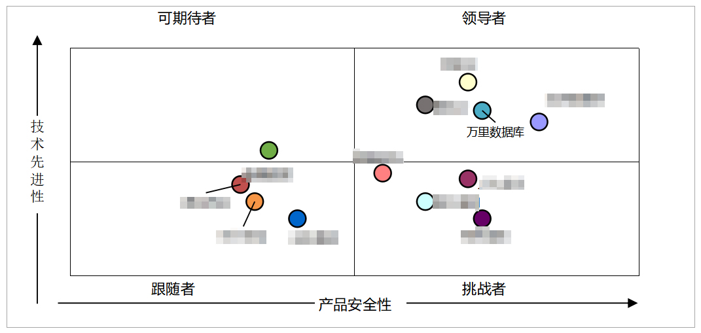
对于未来趋势，赛迪顾问预测，在“十四五”时期，中国数据库市场仍将保持高速增长。2022年由于新冠肺炎疫情对地方经济的冲击，政府及央国企会适当缩减相关预算，造成市场增长较缓。但政务信息化及行业信息化仍是重要方向，因此需求会在新冠肺炎疫情受到控制之后逐步释放出来。除此之外，新基建、东数西算等国家级工程也会促进数据库市场规模不断增长。预计到2025年，中国数据库市场规模将达到600.6亿元。
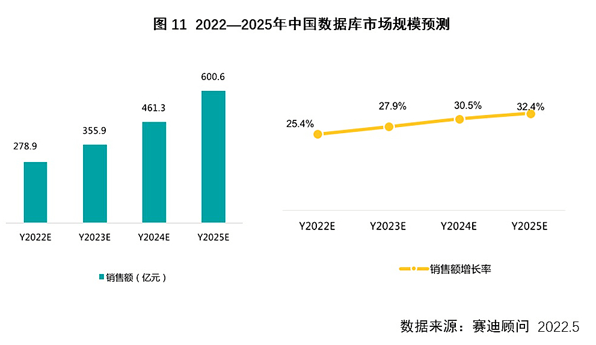
行业分布来看，“十四五”期间，金融、政府仍然是数据库最主要的两大市场。政府领域数字政务的推进会带来一定的市场空间，预计到2025年，政府市场规模将达到121.9亿元。金融领域由于业务类型及客户需求的变化，信息化建设会加速推进，预计到2025年市场规模将达到153.7亿元。
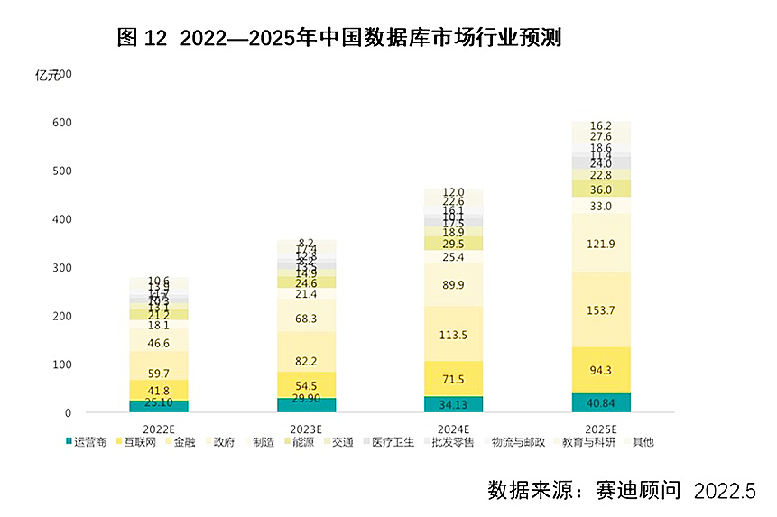
同时，本报告指出了数据库市场未来五大发展趋势。一是基础软件的安全性愈发受到重点行业用户重视；二是私有云本地化部署会成为关键基础设施领域的主要方式；三是开源软件将继续推动数据库技术发展；四是混合事务分析管理架构将逐步推广；五是本土IT生态建设加速，市场渗透率不断提升。
在报告的最后，赛迪顾问对厂商、用户及投资机构提出了一些发展建议。
对厂商而言，要重视研发投入，加快产品与新兴技术融合，同时也要不断提高专业化服务水平，重视实施与交付能力的提升；
对用户来说，综合考虑集中式数据库与分布式数据库，同时在选择产品时要重视专业化服务能力及成功案例可移植性；
对投资机构，要重点关注云数据库及分布式数据库市场。